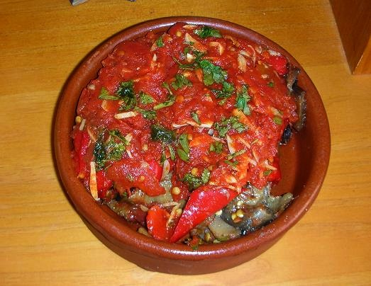
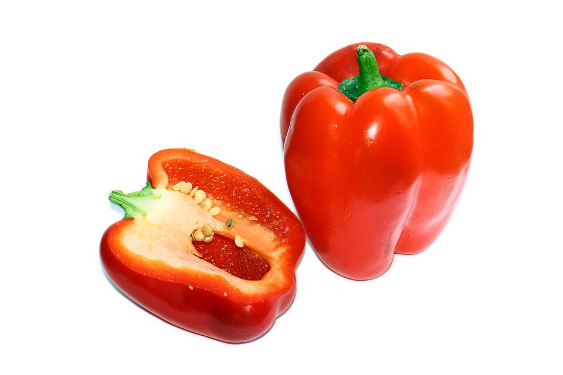
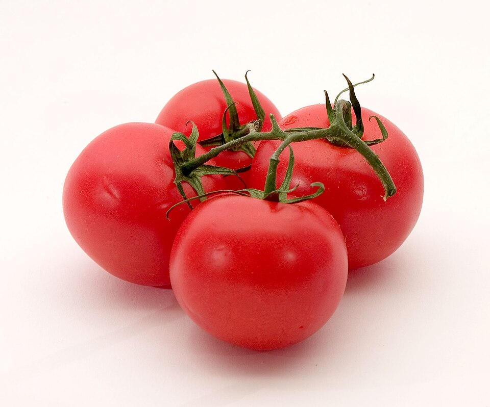

De l’horta · Plat de verdures
Tumbet mallorquí.
El sabor de l’horta, capa a capa.

El sabor de l’horta
El tumbet és un plat tradicional de la cuina mallorquina elaborat amb patates, albergínies, pebres i salsa de tomàtiga. És una recepta especialment vinculada a l’estiu, quan aquestes hortalisses són de temporada. Amb ingredients senzills, ofereix una combinació de sabors i textures que representa la cuina de l’illa.
La preparació consisteix a fregir les verdures per separat i col·locar-les en capes dins una greixonera o una altra font. La salsa de tomàtiga cobreix el conjunt i uneix els ingredients. Com passa amb moltes receptes tradicionals, cada casa en té la seva versió: algunes hi incorporen carabassó o altres petites variacions.
Es pot servir com a plat principal de verdures o com a acompanyament de carn, peix o ous. Un petit repòs abans de dur-lo a taula ajuda a integrar els sabors. Aquesta proposta és una versió casolana per a quatre persones.
Mans a la cuina
Elaboració passa a passa
-
Prepara les hortalisses
Pela les patates i talla-les en rodanxes d’aproximadament mig centímetre. Renta i talla les albergínies en rodanxes semblants. Retira les llavors dels pebres i talla’ls en trossos.
-
Cuina la salsa
Escalfa dues cullerades d’oli i daura-hi suaument els alls picats. Afegeix-hi la tomàtiga, el llorer i un poc de sal. Cou-ho a foc baix uns 20–30 minuts, remenant de tant en tant.
-
Fregeix les patates
Fregeix-les per tandes fins que siguin tendres i lleugerament daurades. Deixa-les escórrer i posa-hi un poc de sal.
-
Cuina les albergínies i els pebres
Fregeix-los per separat fins que siguin tendres. Escorre bé l’excés d’oli de cada tanda.
-
Munta les capes
Col·loca les patates al fons, reparteix-hi les albergínies i els pebres i cobreix-ho amb la salsa. Retira el llorer.
-
Acaba la cocció
En un recipient apte per al forn, cou-ho a 180 °C durant uns 15 minuts. Deixa reposar uns minuts abans de servir.
Els detalls també compten
Una mirada als ingredients



Cuina amb companyia
La recepta en vídeo
Una altra versió de tumbet mallorquí, de Maria Gibert, al canal Recetas Mallorquinas.
Les quantitats i les passes del vídeo poden diferir de la nostra proposta casolana.
Mira el vídeo directament a YouTube
El reproductor és un servei extern de YouTube.